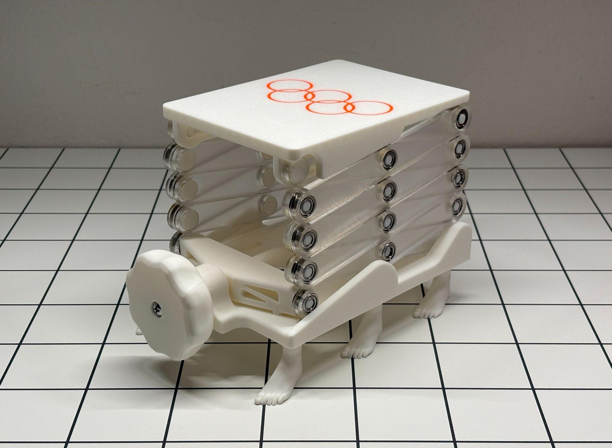
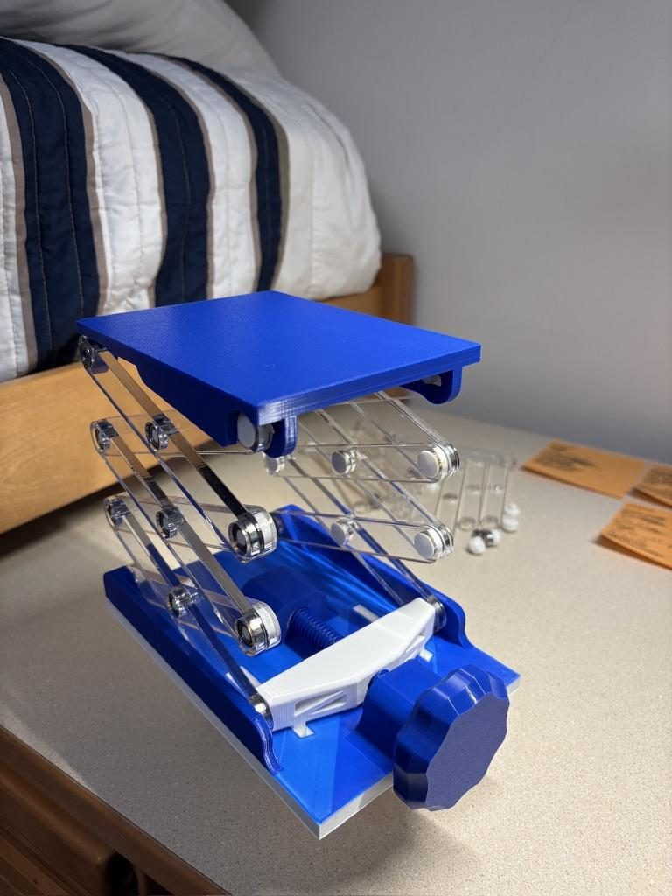
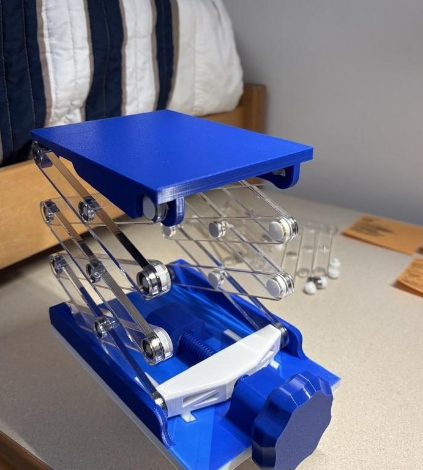
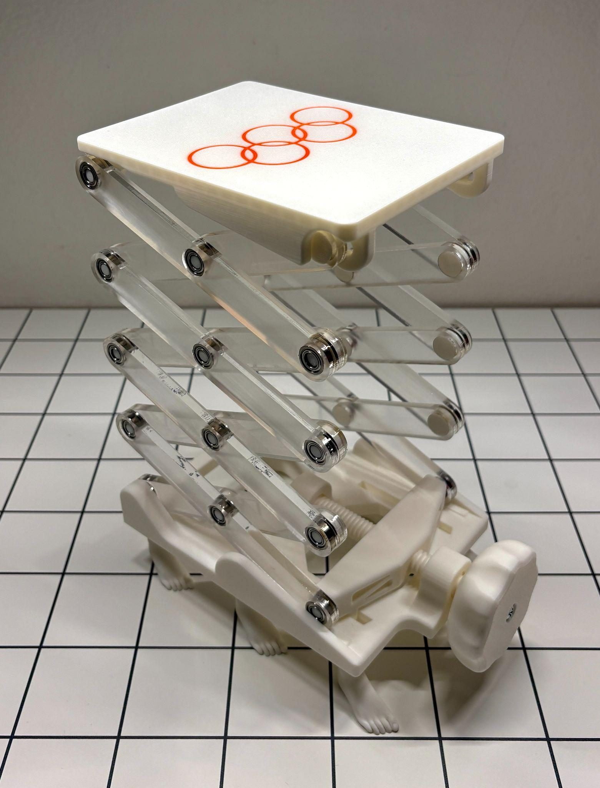

Objective
Design a lift mechanism optimized to reduce material usage and cost while reaching a total extension of 12 inches — double the standard 6-inch target. We also wanted the final build to look exceptionally clean and professional, which shaped a lot of our design decisions. We settled on a scissor lift, since it offered large displacement in a minimal footprint while still looking sharp, actuated by a lead screw we kept from our initial mechanical design research.


Prototyping
During rapid prototyping, we experimented with a cardboard scissor lift, reasoning that any difficulties in our final design would show up more obviously in cardboard first. That prototype revealed that joint placement precision significantly affected friction and performance, that the bottom members would see the greatest stress, and that the lift swayed laterally once fully extended.

Materials, Building & Analysis
We used laser-cut acrylic for the scissor members and 3D printed PLA for the base, lead screw, pins, and shelf — acrylic was available in scrap, strong enough for the payload, and quick to manufacture in quantity. Bearings friction-fit into each member let the lift expand and contract with minimal resistance while staying rigid. The 3D printed pins turned out to be the weak point, and we did see some cracking under pressure, but the acrylic members handled loads well beyond our 2.5 lb goal, and the lead screw lifted the load with acceptable friction. We also solved an early leverage issue by starting the lift slightly above fully collapsed, and added base tracks to keep both scissors extending evenly.


Reflection
We hit our goal of 12 inches of extension with minimal material and cost, and had some fun adding unique details — sanding the acrylic members for a frosted look, multi-material-printing Olympic rings into the top (it happened to be an Olympic year), and adding a lift to the base once we realized it needed one. For a future version, we'd consider a skirt to cover the extending mechanism, or a metal lead screw to reduce flex even further.